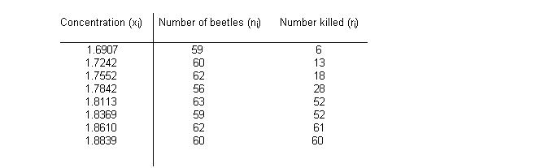
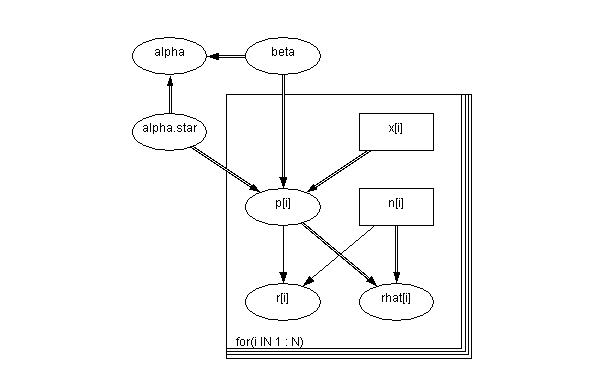
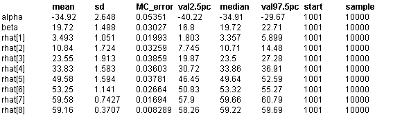
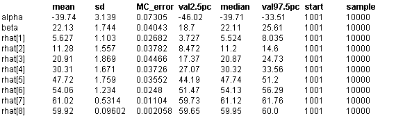

![[beetles0]](beetles0.bmp) Beetles: choice of link function
Beetles: choice of link function
Dobson (1983) analyses binary dose-response data published by Bliss (1935), in which the numbers of beetles killed after 5 hour exposure to carbon disulphide at N = 8 different concentrations are recorded:

We assume that the observed number of deaths r
i
at each concentration x
i
is binomial with sample size n
i
and true rate p
i
. Plausible models for pi include the logistic, probit and extreme value (complimentary log-log) models, as follows
p
i
= exp(
a
+
b
x
i
) / (1 + exp(
a
+
b
x
i
)
p
i
= Phi(
a
+
b
x
i
)
p
i
= 1 - exp(-exp(
a
+
b
x
i
))
The corresponding graph is shown below:

model
{
for( i in 1 : N ) {
r[i] ~ dbin(p[i],n[i])
cloglog(p[i]) <- alpha.star + beta * (x[i] - mean(x[]))
rhat[i] <- n[i] * p[i]
cumulative.r[i] <- cumulative(r[i], r[i])
}
alpha <- alpha.star - beta * mean(x[])
beta ~ dnorm(0.0,0.001)
alpha.star ~ dnorm(0.0,0.001)
}
Data
( click to open )
Inits for chain 1 Inits for chain 2
( click to open )
Results
A 1000 update burn in followed by a further 10000 updates gave the parameter estimates
Logit model
![[beetles3]](beetles3.bmp)
Probit model

Extreme value (cloglog) model
